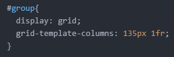

- 미디어 쿼리에 대하여 알아보기
오늘은 미디어 쿼리에 대해 알아보려고 합니다.
어떤 웹 사이트를 볼 때 전체화면으로 볼 때도 있고 화면의 절반 크기나 1/4 크기로 볼 때도 있습니다.
예를 들어, 화면의 절반 크기 정도로 볼 때는 다음과 같은 화면을 볼 수 있습니다.
그리고 화면의 1/4 정도 크기로 볼 때는 다음과 같은 화면을 볼 수 있습니다.
화면 절반 크기일 땐 바로가기 아이콘이 8개였지만, 1/4 크기에선 4개로 줄은 것을 알 수 있습니다.
이렇게 특정 조건(여기서는 화면의 크기가 바뀔 때)을 만족할 때만 CSS가 적용되도록 할 수 있습니다.
그리고 이때 필요한 것이 바로 '미디어 쿼리'입니다.
사용법은 크게 어렵지 않습니다.
우선, 미디어 쿼리를 적용시키고자 하는 태그를 선택합니다.
저는 'img' 태그를 선택하겠습니다.
그리고 화면의 폭이 500px 이하일 때 모든 이미지가 화면에 출력되지 않게 해보려고 합니다.
아래 사진을 보시면 화면의 폭이 442px임에도 모든 이미지가 보이고 있습니다.
이럴때 모든 이미지가 안 보이게 하려는 것입니다.
'style' 태그에 다음과 같은 코드를 작성해줍니다.
'@media'를 작성한 후 () 안에는 조건을 넣어주시면 됩니다.
그리고 {} 안에는 변화를 주고자 하는 선택자를 작성한 후, 원하는 결과에 맞게 선언을 작성해주시면 됩니다.
해당 코드르 적용하면 다음과 같은 결과가 나오게 됩니다.
지금은 'body' 태그 내에 있는 태그에 적용했지만, 'style' 태그 내에 있는 선택자에도 적용이 가능합니다.
16일에 작성했던 코드를 예로 들어보겠습니다.

화면의 폭이 500px 이하일 때 그리드 기능을 사용하지 않으려고 한다면, 다음과 같이 코드를 작성해주면 되는 것입니다.
'grid-template-columns'와 같은 속성은 굳이 포함시킬 필요가 없습니다.
'변화'를 주고싶은 속성만 포함시키면 됩니다.
어쨌든 이런 식으로 작성하면 화면 폭이 500px 이하일 때 그리드 기능이 중단됩니다.
오늘은 여기까지 하겠습니다.
그럼 내일도 화이팅!